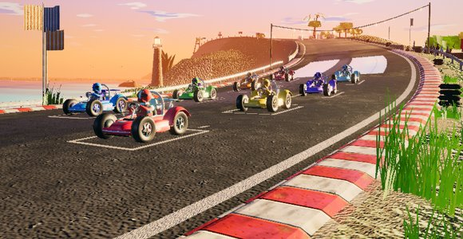
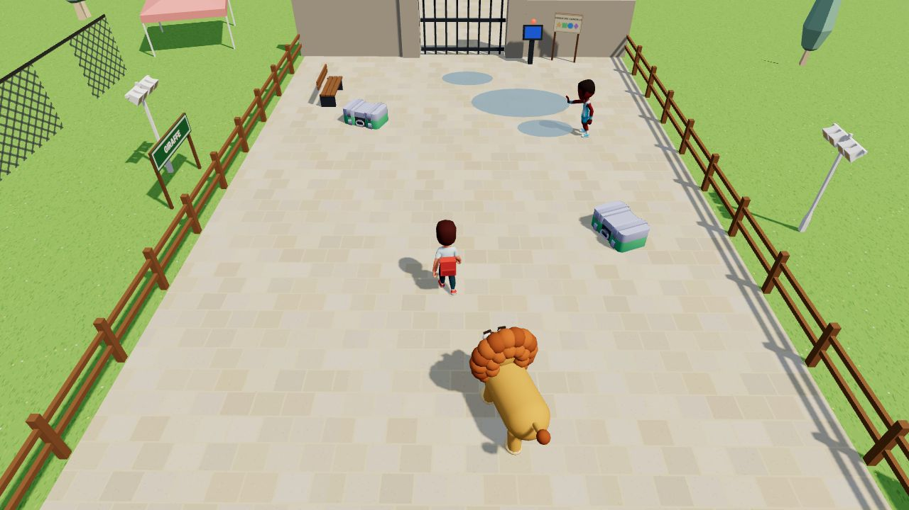

Videogiochi ABA
Piccoli giochi da usare in un intervento ABA supervisionato.

La cameretta di Francesco
Gioco 3D: quando sale la rabbia giocando al tablet, scegliere la pausa.

Il leone e il caos
Gioco 3D: quando un enigma è troppo difficile, chiedere aiuto invece di mollare.